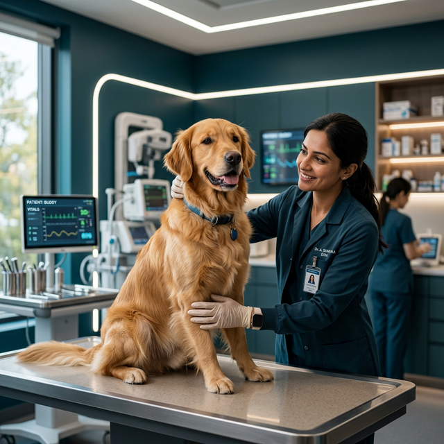
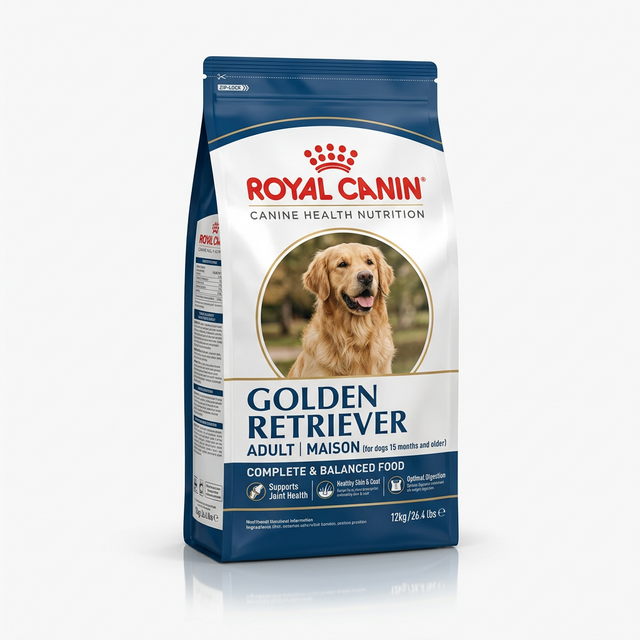
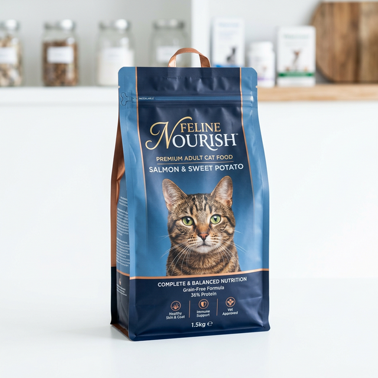
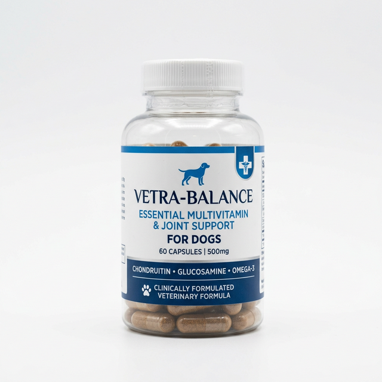
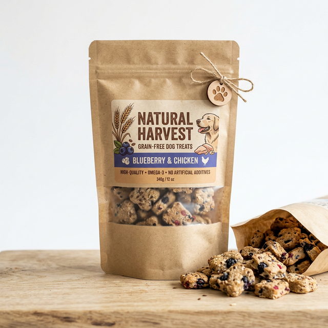

Clínica Veterinaria San Alberto, dirigida por el Dr. Alberto Sánchez. Cirugías, consultas, vacunas y más — en Av. San Pablo 6106, Lo Prado.

Ecosistema de Servicios
Tecnología clínica de nivel hospitalario para el bienestar integral de tu mascota
Tecnología Clínica
Accede al historial de salud de tu mascota en tiempo real. Dashboard médico ultra-limpio diseñado para dar tranquilidad.
Tienda Premium
Alimentos seleccionados y aprobados por nuestros veterinarios. Curación editorial, calidad hospitalaria.




Impacto Real
← Desliza para ver la transformación →